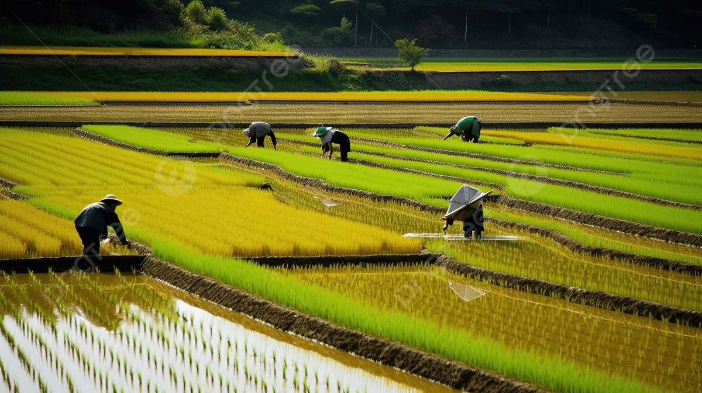

Informasi komoditas, luas lahan, dan kelompok tani Desa Suntenjaya.

Informasi komoditas, luas lahan, kelompok tani, dan hasil panen.
Desa Suntenjaya memiliki berbagai komoditas hortikultura yang menjadi unggulan, antara lain:
Sebagian besar wilayah Desa Suntenjaya dimanfaatkan sebagai lahan pertanian hortikultura yang dikelola oleh masyarakat secara produktif.
Terdapat 12 kelompok tani aktif yang berperan dalam meningkatkan produksi, kualitas hasil panen, serta pemberdayaan petani desa.
Sektor pertanian merupakan penyumbang pendapatan terbesar bagi masyarakat Desa Suntenjaya. Mayoritas petani membudidayakan sayuran hortikultura seperti kubis, wortel, kentang, tomat, cabai, dan bawang daun yang dipasarkan ke pasar tradisional maupun distributor di wilayah Bandung dan sekitarnya.
| Produksi Sayuran | 120 Ton/Tahun |
| Rata-rata Harga Jual | Rp7.000/kg |
| Perkiraan Nilai Produksi | ± Rp840.000.000/Tahun |
| Petani Aktif | 450 Orang |
Pendapatan tersebut menjadi sumber utama ekonomi masyarakat serta mendukung peningkatan kesejahteraan keluarga petani.
| Komoditas | Hasil Panen/Tahun | Harga Rata-rata | Perkiraan Pendapatan |
|---|---|---|---|
| Kubis | 35 Ton | Rp6.000/kg | Rp210.000.000 |
| Wortel | 25 Ton | Rp8.000/kg | Rp200.000.000 |
| Kentang | 22 Ton | Rp12.000/kg | Rp264.000.000 |
| Tomat | 18 Ton | Rp7.000/kg | Rp126.000.000 |
| Cabai | 10 Ton | Rp30.000/kg | Rp300.000.000 |
| Bawang Daun | 10 Ton | Rp15.000/kg | Rp150.000.000 |
| Total | 120 Ton | - | Rp1.250.000.000 |
Desa Suntenjaya memiliki potensi pertanian yang sangat besar karena berada di kawasan dataran tinggi dengan suhu udara yang sejuk, curah hujan yang cukup, serta tanah yang subur. Kondisi tersebut sangat mendukung budidaya berbagai komoditas hortikultura seperti kubis, wortel, kentang, tomat, cabai, dan bawang daun.
Selain didukung oleh kondisi alam, sektor pertanian juga diperkuat oleh keberadaan 12 kelompok tani aktif yang berperan dalam meningkatkan kualitas produksi, penerapan teknologi pertanian, serta pemasaran hasil panen. Hasil pertanian Desa Suntenjaya dipasarkan ke pasar tradisional, supermarket, distributor sayuran, hingga berbagai daerah di Kabupaten Bandung Barat dan Kota Bandung.
Sektor pertanian merupakan mata pencaharian utama masyarakat Desa Suntenjaya dengan total produksi sekitar 120 ton sayuran per tahun. Komoditas yang memberikan kontribusi terbesar adalah kubis, wortel, dan kentang yang memiliki permintaan pasar cukup tinggi.
Berdasarkan data produksi, estimasi nilai hasil panen mencapai sekitar Rp1.250.000.000 per tahun. Pendapatan tersebut berasal dari penjualan berbagai komoditas hortikultura yang dibudidayakan oleh sekitar 450 petani aktif di Desa Suntenjaya.
| Indikator | Keterangan |
|---|---|
| Total Produksi | 120 Ton/Tahun |
| Komoditas Unggulan | Kubis, Wortel, Kentang |
| Petani Aktif | 450 Orang |
| Kelompok Tani | 12 Kelompok |
| Estimasi Pendapatan | Rp1.250.000.000/Tahun |